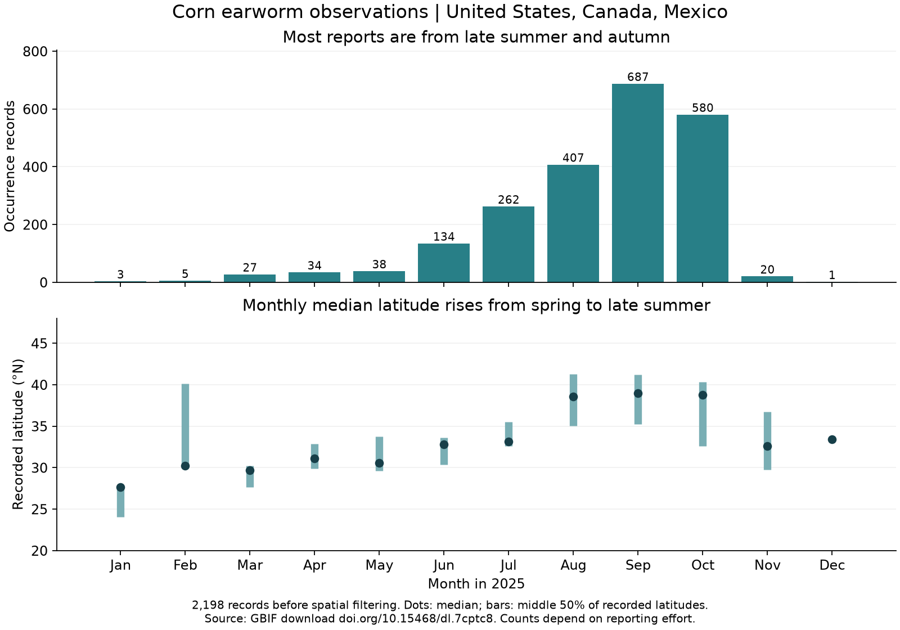

Local draft preview
Corn earworm sightings across the 2025 growing season
I picked corn earworm because corn is important to the US economy and food supply. It's used for livestock feed, food ingredients, and ethanol (USDA ERS).
I wanted to see whether corn earworm sightings were farther north in summer than in spring.
Corn earworm (Helicoverpa zea) caterpillars feed on crops. The adult moths can travel long distances, and arrivals from the south help establish seasonal populations in northern areas where cold winters limit survival (UF/IFAS).
The data
I used a GBIF download of 2025 observations from iNaturalist. I chose a complete calendar year and kept the 2,198 records from the US, Canada, and Mexico to look at northern seasonal spread. These records have coordinates and no flagged geographic issues. Most of them, 2,135, are from the US.
I grouped the records using RESOLVE Ecoregions 2017, which divides land into regions with distinct ecological communities. Seventeen records didn't match a region. I required at least two records per ecoregion per month so the map wouldn't highlight an entire region based on a single sighting. That left 2,123 records in 39 ecoregions for the map.
More northern ecoregions have records by September
Open the full map or view the static comparison.

For the colors, I divided each group's count by the averages for its ecoregion and month, using only retained groups. The logarithmic color scale stays the same across months. This score helps compare patterns, but it isn't an animal count or a measure of how much people looked.
The March map is mostly southern. By September, more northern ecoregions have records. February and December are blank because none of their groups passed the filter.
Recorded latitude is higher by September

All 2,198 records, before the map filters. Dots show monthly medians; bars span the middle 50% of recorded latitudes, not confidence intervals.
The median latitude went from 29.7°N in March to 38.9°N in September. This fits the expected northward spread. However, March had 27 records and September had 687, so changes in where and how much people looked could also affect the pattern.
November's median was farther south, but there were only 20 records. I wouldn't take that alone as evidence of return migration.
Twaibu et al. (2026) found isotope evidence that some moths collected in Florida came from farther north. These occurrence records don't track individuals or distinguish life stages, and some locations are imprecise. They show where sightings were reported, but can't establish those journeys.